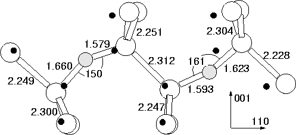

We tried seperating the dimer to give a single Si-Si bond along
 110
110 between the Oi atoms. It was suggested that this might
be the source of the 1105 cm-1 vibrational mode often seen at the
same time as the dimer modes. The resultant structure is shown in
Figure 6.8, with vibrational modes in
Table 6.4. As can be seen, the modes are not in good
agreement with the 1105 cm-1 LVM, excluding this as a model.
Instead of dropping, the assymetric Oi stretch modes increase in
frequency due to the proximity of the atoms. In addition the
calculations gave this structure as over 1.5 eV less stable than the
puckered dimer, which although probably an overestimate, suggests the
defect is not stable in this configuration. The defect is not
positioned symmetrically in the cluster, and this manifests itself in
the assymetric atomic shifts from their ideal lattice positions, and
the split top mode; in the fully symmetric structure this would be
degenerate with D2h symmetry.
between the Oi atoms. It was suggested that this might
be the source of the 1105 cm-1 vibrational mode often seen at the
same time as the dimer modes. The resultant structure is shown in
Figure 6.8, with vibrational modes in
Table 6.4. As can be seen, the modes are not in good
agreement with the 1105 cm-1 LVM, excluding this as a model.
Instead of dropping, the assymetric Oi stretch modes increase in
frequency due to the proximity of the atoms. In addition the
calculations gave this structure as over 1.5 eV less stable than the
puckered dimer, which although probably an overestimate, suggests the
defect is not stable in this configuration. The defect is not
positioned symmetrically in the cluster, and this manifests itself in
the assymetric atomic shifts from their ideal lattice positions, and
the split top mode; in the fully symmetric structure this would be
degenerate with D2h symmetry.
Earlier calculations showed that the energy of this structure could be
lowered by placing the Oi atoms in perpendicular  110
110 planes,
thus lowering the conflict between their stress fields. This roughly
corresponds to cis- and trans- isomers. The separation of the O atoms
is now a/8 (2 3 3). However the energy differences between these
structures is quite dependant on the basis set used and number of bond
centres, and so although this earlier work predicted a binding energy
of 0.7 eV for the dimer, we might expect an error on this of 50% or
more.
planes,
thus lowering the conflict between their stress fields. This roughly
corresponds to cis- and trans- isomers. The separation of the O atoms
is now a/8 (2 3 3). However the energy differences between these
structures is quite dependant on the basis set used and number of bond
centres, and so although this earlier work predicted a binding energy
of 0.7 eV for the dimer, we might expect an error on this of 50% or
more.
|  |